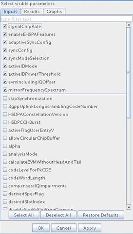
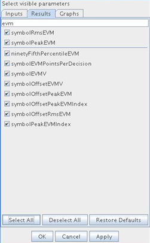

Configuring parameter list
The parameter list shown on the Demodulation dialog can be configured.
This task shows how to configure the demodulation parameter list.
Make sure that the signal analyzer is open and the demodulation tool is open.
To access the Parameter List Configuration dialog click the Configure Parameter List icon on the toolbar of the Demodulation dialog. The title indicates the current selected modulation standard. By switching the standard in the Demodulation dialog, the opened Parameter List Configuration dialog will be refreshed. The following picture illustrates the WCDMA_HSDPA_UPLINK case.

The Parameter List Configuration dialog contains three tabs. On each tab the complete list of input parameters, result parameters or graph options are displayed. In front of each parameter there is a check-box indicating whether this parameter is shown or hidden in the Demodulation dialog. In the middle of each tab there is a horizontal line. Above this line the important/common parameters which are shown in the Demodulation dialog by default are listed. While below the line are less commonly used ones which are hidden by default.
You can make use of the buttons at the bottom of each tab to check or uncheck all parameters on this tab. You can also press the Restore Defaults button to restore the default configuration, namely all parameters above the horizontal line are checked and those below the line are unchecked.
After finishing the configuration you can press OK or Apply button at the bottom to apply current configuration of all tabs to the Demodulation dialog. Consequently all checked parameters will be shown and the rest will be hidden. You can press Cancel button to exit without applying the configuration.
Once you apply the configuration, the current configuration will be remembered by the tool (saved under $DEVICE/waste/.demod/). Next time you choose the same modulation standard under the same device, the stored configuration will be loaded. If there is no stored configuration file, default configuration will be used.
In order to migrate a saved configuration from one device to another, you can simply copy the .demod directory to the destination device directory. Besides the parameter list configuration, the stored information under .demod directory also includes the layout setting (horizontal or vertical layout) and the last loaded parameter file for each standard.
A text field is provided on top of each tab to filter out parameters. You can make use of this text filed to ease your configuration. For instance, you may only be interested in EVM related results. Then you can do the followings:
- Switch to the Results tab.
- Make sure the filter text field is empty.
- Click the Deselect All button.
- In filter text field type in evm, then only those results that contain the string evm are displayed in the tab. The rest are hidden. Note that the filter string is case insensitive.
- Click the Select All button to check all displayed results.
- Click the OK or Apply button to apply this configuration to the Demodulation dialog. This is illustrated in the next picture.

Functional changes
- Introduced in SmarTest 7.1.2